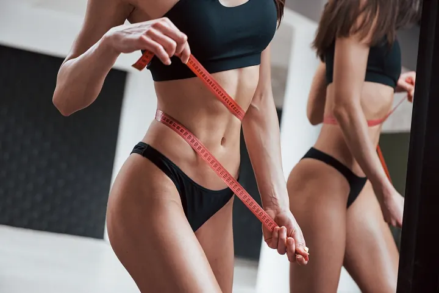

Modelowanie sylwetki po 40. roku życia nie musi oznaczać wielogodzinnych treningów na siłowni, restrykcyjnych diet ani niekończących się prób odzyskania formy sprzed lat. Po czterdziestce organizm rzeczywiście zaczyna się zmieniać, ale nie oznacza to, że trzeba pogodzić się z utratą jędrności, wzrostem obwodu talii, osłabieniem mięśni czy pojawieniem się bardziej widocznego cellulitu.
Wręcz przeciwnie – odpowiednio dobrany trening, racjonalne odżywianie, regeneracja i konsekwencja mogą bardzo skutecznie poprawić wygląd oraz funkcjonowanie ciała.
Jedną z nowoczesnych metod, która szczególnie dobrze wpisuje się w potrzeby osób 40+, jest trening EMS, czyli elektrostymulacja mięśni połączona z aktywnością ruchową. W Impulse Therapy Trening EMS w Łodzi oferujemy dodatkowo rozwiązanie, którego trudno szukać w klasycznych klubach fitness: trener przyjeżdża do klienta z całym niezbędnym sprzętem EMS i przeprowadza trening w domu, mieszkaniu, apartamencie czy biurze.
To połączenie technologii, indywidualnego treningu personalnego i mobilności sprawia, że modelowanie sylwetki może stać się znacznie łatwiejsze do pogodzenia z codziennym życiem.
Wybierając najlepszy elektrostymulacja Mięśniowa – sposób na szybką i bezpieczną poprawę kondycji. IMPULSE THERAPY Trening EMS Łódź, Łódź, 729830460 Rozpocznij karierę jako trener EMS dzięki Szkolenie z EMS i poznaj wszystkie aspekty pracy trenera EMS.
Modelowanie sylwetki po 40. – dlaczego ciało zaczyna się zmieniać?
Wiele osób po czterdziestce zauważa, że metody, które działały w wieku 20 czy 30 lat, przestają przynosić takie same rezultaty.
Jeszcze kilka lat wcześniej wystarczyło ograniczyć słodycze, zwiększyć aktywność i po kilku tygodniach waga zaczynała spadać. Po 40. roku życia redukcja tkanki tłuszczowej może przebiegać wolniej, a utrzymanie masy mięśniowej staje się szczególnie istotne.
Nie oznacza to jednak, że „metabolizm się zepsuł”.
Na wygląd sylwetki wpływa wiele elementów:
- mniejsza spontaniczna aktywność fizyczna,
- siedzący tryb pracy,
- mniej czasu na regularny trening,
- stopniowa utrata masy mięśniowej,
- zmiany hormonalne związane z wiekiem,
- gorsza jakość snu,
- przewlekły stres,
- mniej regularne posiłki,
- większa ilość kalorii w diecie,
- ograniczenie aktywności po kontuzjach lub przeciążeniach.
Dlatego skuteczne modelowanie sylwetki po 40. roku życia powinno być podejściem kompleksowym.
Nie chodzi wyłącznie o to, aby wskazówka na wadze pokazywała mniej kilogramów.
Często znacznie ważniejsze jest:
mniej tkanki tłuszczowej + więcej lub utrzymanie mięśni + lepsze napięcie ciała + poprawa proporcji sylwetki.
To właśnie dlatego osoby po czterdziestce często bardziej doceniają trening nastawiony na jakość sylwetki niż samo odchudzanie.
Odchudzanie po 40. roku życia – dlaczego sama dieta nie zawsze wystarcza?
Jeżeli celem jest odchudzanie Łódź i okolice oferują wiele możliwości: siłownie, kluby fitness, treningi personalne, zabiegi na ciało czy programy dietetyczne.
Problem polega jednak na tym, że wiele osób zaczyna proces redukcji od samego ograniczenia jedzenia.
Efekt?
Waga może rzeczywiście spaść, ale razem z tkanką tłuszczową może zmniejszać się również masa mięśniowa. Sylwetka staje się lżejsza, ale niekoniecznie bardziej jędrna i proporcjonalna.
Po 40. roku życia szczególnie warto więc myśleć o rekompozycji sylwetki.
Jej celem jest poprawa proporcji między tkanką tłuszczową i mięśniową.
Dlatego plan może obejmować:
- umiarkowany deficyt kaloryczny,
- odpowiednią ilość białka,
- trening oporowy,
- codzienną aktywność,
- sen i regenerację,
- nawodnienie,
- regularne monitorowanie obwodów i składu ciała.
W tym miejscu pojawia się trening EMS.
EMS po 40. roku życia – dlaczego warto go rozważyć?
EMS, czyli Electrical Muscle Stimulation, wykorzystuje impulsy elektryczne do wywoływania skurczów mięśni. Podczas treningu impulsy są przekazywane przez elektrody umieszczone w specjalnym stroju, a klient wykonuje jednocześnie odpowiednio dobrane ćwiczenia.
Technologia EMS jest wykorzystywana do treningu i wzmacniania mięśni. Producent XBody opisuje EMS jako metodę treningu całego ciała, której zaletą jest możliwość efektywnej pracy nad dużymi grupami mięśni przy krótkiej sesji.
Dla osoby po 40. roku życia szczególnie interesujące może być połączenie:
krótkiego czasu treningu + indywidualnego prowadzenia + aktywacji wielu grup mięśniowych + możliwości dopasowania intensywności.
To bardzo ważne w przypadku osób, które nie chcą lub nie mogą spędzać kilku godzin tygodniowo na siłowni.
Modelowanie sylwetki Łódź – czym właściwie jest modelowanie ciała?
Pojęcie „modelowanie sylwetki” jest szersze niż odchudzanie.
Modelowanie oznacza pracę nad proporcjami ciała.
Może obejmować:
- zmniejszenie obwodu talii,
- wzmocnienie mięśni brzucha,
- poprawę wyglądu pośladków,
- wysmuklenie ud,
- poprawę napięcia ramion,
- wzmocnienie pleców,
- poprawę postawy,
- zwiększenie siły,
- poprawę ogólnej sprawności.
Dlatego osoba, która waży 70 kg, niekoniecznie musi dążyć do 60 kg.
Jeżeli przy zachowaniu podobnej masy ciała uda się zmniejszyć poziom tkanki tłuszczowej i poprawić umięśnienie, sylwetka może wyglądać zdecydowanie lepiej.
To jeden z powodów, dla których trening EMS w Łodzi może być interesującym rozwiązaniem dla osób po 40. roku życia.
Trening EMS Łódź z dojazdem – największa przewaga Impulse Therapy
W przypadku Impulse Therapy najważniejszym elementem oferty nie jest wyłącznie sama technologia EMS.
Jest nim mobilność.
Nie musisz jechać na trening.
Trening przyjeżdża do Ciebie.
Trener zabiera ze sobą niezbędny sprzęt, przygotowuje stanowisko i prowadzi indywidualną sesję w miejscu wybranym przez klienta.
Może to być:
- mieszkanie,
- dom,
- apartament,
- biuro,
- przestrzeń firmowa,
- inne odpowiednio przygotowane miejsce.
W praktyce oznacza to, że mieszkańcy Łodzi nie muszą planować dodatkowego czasu na:
- dojazd do klubu,
- parkowanie,
- przebieranie się w szatni,
- oczekiwanie na urządzenie,
- powrót do domu.
To szczególnie istotne dla osób pracujących intensywnie, przedsiębiorców, rodziców i osób, które po pracy nie chcą ponownie wsiadać do samochodu.
EMS w domu Łódź – trening dopasowany do współczesnego stylu życia
Współczesny problem wielu osób nie polega na braku wiedzy.
Większość ludzi doskonale wie, że warto się ruszać, dobrze odżywiać i wzmacniać mięśnie.
Problemem jest czas i regularność.
Można kupić karnet na siłownię, ale jeśli trzeba dojeżdżać 20 minut w jedną stronę, trening zaczyna wymagać znacznie większego zaangażowania organizacyjnego.
Mobilny EMS rozwiązuje ten problem.
W przypadku EMS w domu w Łodzi wystarczy przygotować niewielką przestrzeń do ćwiczeń. Trener przyjeżdża z wyposażeniem i prowadzi sesję na miejscu.
To rozwiązanie dla osób, które cenią:
- prywatność,
- wygodę,
- oszczędność czasu,
- indywidualne podejście,
- elastyczność,
- brak konieczności dojazdu.
I właśnie ta mobilność jest jednym z najważniejszych elementów przewagi Impulse Therapy.
Dlaczego trening personalny EMS jest szczególnie interesujący dla osób 40+?
Po czterdziestce coraz większego znaczenia nabiera prawidłowa technika wykonywania ćwiczeń.
Nie chodzi już o to, aby za wszelką cenę zrobić jak najwięcej powtórzeń.
Liczy się jakość.
Trening powinien być dostosowany do:
- aktualnej kondycji,
- poziomu siły,
- mobilności,
- doświadczenia treningowego,
- celu sylwetkowego,
- ewentualnych ograniczeń ruchowych,
- możliwości regeneracyjnych.
Dlatego trener personalny EMS Łódź może być ciekawą alternatywą dla samodzielnego treningu.
Trener kontroluje wykonywanie ćwiczeń, dobiera parametry stymulacji i może stopniowo zwiększać poziom trudności.
EMS nie oznacza bowiem leżenia i „nicnierobienia”.
Dobre wykorzystanie elektrostymulacji powinno być połączone z aktywnym ruchem i odpowiednio dobranymi ćwiczeniami.
XBody – na jakim sprzęcie pracujemy?
W Impulse Therapy wykorzystujemy urządzenia marki XBody, specjalizującej się w profesjonalnych rozwiązaniach EMS.
XBody rozwija własne urządzenia, oprogramowanie oraz rozwiązania przeznaczone do profesjonalnego treningu EMS. Producent wskazuje również na rozwój własnego zaplecza badawczo-rozwojowego i produkcyjnego oraz systemy kontroli jakości.
To ważne, ponieważ w przypadku elektrostymulacji jakość sprzętu i możliwość precyzyjnego ustawienia parametrów mają znaczenie dla komfortu oraz bezpieczeństwa treningu.
W ofercie XBody znajdują się rozwiązania umożliwiające prowadzenie zarówno treningów indywidualnych, jak i grupowych. Producent opisuje możliwość jednoczesnej obsługi kilku osób przy zachowaniu indywidualnych ustawień.
Dzięki temu EMS może być nie tylko treningiem indywidualnym, ale także ciekawą formą aktywności dla par czy niewielkich grup.
Zabiegi na ciało Łódź – gdzie w tym wszystkim znajduje się EMS?
Osoby zainteresowane poprawą wyglądu często wpisują w wyszukiwarkę takie hasła jak:
- zabiegi na ciało Łódź,
- modelowanie sylwetki Łódź,
- wyszczuplanie Łódź,
- redukcja cellulitu Łódź,
- ujędrnianie ciała Łódź,
- odchudzanie Łódź,
- redukcja tkanki tłuszczowej Łódź,
- trening EMS Łódź,
- EMS w domu Łódź.
Warto jednak rozróżnić zabieg kosmetyczny od treningu.
EMS jest przede wszystkim metodą stymulacji mięśni i treningu. W zależności od zastosowanego programu oraz sposobu prowadzenia sesji może być elementem szerszego planu pracy nad wyglądem ciała.
Nie powinien być przedstawiany jako magiczny sposób na pozbycie się tłuszczu.
Najlepsze rezultaty osiąga się wtedy, gdy EMS jest jednym z elementów całego procesu.
Redukcja cellulitu Łódź – czy EMS może pomóc?
Cellulit jest niezwykle częstym problemem estetycznym.
Dotyczy zarówno osób szczupłych, jak i osób z nadmierną masą ciała.
Jego wygląd może być związany między innymi z:
- strukturą tkanki łącznej,
- rozmieszczeniem tkanki tłuszczowej,
- napięciem skóry,
- mikrokrążeniem,
- stylem życia,
- poziomem aktywności,
- zmianami hormonalnymi.
Dlatego nie istnieje jedna uniwersalna metoda, która całkowicie eliminuje cellulit u każdego.
EMS może być jednak elementem kompleksowej strategii poprawy wyglądu skóry i sylwetki. Producent XBody wskazuje, że trening EMS może wspierać tonizowanie ciała, pracę nad tkanką tłuszczową i wyglądem cellulitu, szczególnie jako część odpowiednio prowadzonego treningu.
W praktyce warto więc myśleć:
ruch + mięśnie + dieta + nawodnienie + regeneracja + konsekwencja.
A nie:
jeden zabieg = brak cellulitu.
Ujędrnianie ciała po 40. roku życia
Jednym z najczęstszych celów osób po 40. roku życia jest poprawa jędrności.
Problem może pojawić się po:
- redukcji masy ciała,
- ciąży,
- okresie mniejszej aktywności,
- siedzącym trybie pracy,
- utracie masy mięśniowej,
- zmianach związanych z wiekiem.
Wzmocnienie mięśni może poprawić wygląd sylwetki i jej napięcie.
Dlatego trening EMS może być wartościowym elementem programu ukierunkowanego na ujędrnianie ciała.
Szczególnie często klienci zwracają uwagę na:
Brzuch
Praca nad mięśniami tułowia może poprawić stabilizację i wygląd środkowej części ciała.
Pośladki
Ćwiczenia ukierunkowane na pośladki mogą pomóc poprawić ich siłę, napięcie i proporcje sylwetki.
Uda
Wzmocnienie mięśni nóg może poprawić ich wygląd i funkcjonalność.
Ramiona
Trening może być wykorzystany do poprawy siły oraz napięcia mięśni kończyn górnych.
Wyszczuplanie brzucha po 40. – ważna rzecz, o której trzeba pamiętać
Wiele osób rozpoczynających odchudzanie po 40. roku życia chce przede wszystkim zmniejszyć brzuch.
To zrozumiałe.
Trzeba jednak pamiętać o jednej ważnej zasadzie:
nie można miejscowo spalać tkanki tłuszczowej wyłącznie dlatego, że ćwiczymy konkretną partię ciała.
Wykonywanie wielu ćwiczeń na brzuch wzmacnia mięśnie brzucha, ale redukcja tkanki tłuszczowej jest procesem ogólnoustrojowym.
Dlatego skuteczny plan powinien łączyć:
- odpowiednie żywienie,
- aktywność fizyczną,
- trening siłowy lub EMS,
- codzienny ruch,
- sen,
- regenerację.
EMS może wspierać pracę mięśni brzucha, ale nie zastępuje odpowiednio zaplanowanego procesu redukcji.
To właśnie takie realistyczne podejście jest najbliższe trwałym efektom.
Czy EMS pomaga schudnąć?
To jedno z najczęściej zadawanych pytań.
Odpowiedź brzmi:
EMS może wspierać proces redukcji masy ciała i tkanki tłuszczowej, ale nie zastępuje deficytu energetycznego ani prawidłowego odżywiania.
Podczas treningu EMS mięśnie są aktywnie stymulowane, a klient wykonuje ćwiczenia. Zwiększa to zaangażowanie mięśni i wydatek energetyczny.
Jednocześnie EMS może być pomocny w utrzymaniu aktywności osobom, które mają mało czasu na tradycyjny trening.
Nie warto jednak wierzyć w hasła sugerujące, że sam EMS „spala tłuszcz bez wysiłku”.
Dobre modelowanie sylwetki to proces.
Jeżeli ktoś chce schudnąć, najważniejszym elementem jest długoterminowy bilans energetyczny.
Jeżeli chce wyglądać lepiej, potrzebuje również mięśni.
I tutaj EMS może być bardzo dobrym narzędziem.
Jak często trenować EMS po 40. roku życia?
Częstotliwość treningów powinna być ustalana indywidualnie.
EMS jest intensywnym bodźcem dla mięśni, dlatego regeneracja jest ważnym elementem programu.
W praktyce nie chodzi o zasadę:
im więcej treningów, tym lepiej.
Znacznie ważniejsza jest jakość i regularność.
W materiałach dotyczących XBody pojawia się model krótkich sesji całego ciała, natomiast dokładna częstotliwość powinna być dostosowana do osoby, jej doświadczenia oraz poziomu regeneracji.
W Impulse Therapy plan treningowy jest ustalany indywidualnie.
Po 40. roku życia jest to szczególnie ważne, ponieważ możliwości regeneracyjne mogą być inne niż kilkanaście lat wcześniej.
Ile trwa trening EMS?
Jedną z największych zalet EMS jest czas.
Sesja treningowa jest krótka, a pełna wizyta obejmuje również przygotowanie, założenie sprzętu, ustawienie parametrów i zakończenie treningu.
XBody opisuje trening całego ciała jako rozwiązanie pozwalające na efektywną pracę w krótkim czasie, a jego materiały wskazują na około 20-minutowe sesje.
Dla wielu osób po 40. roku życia to ogromna zaleta.
Nie musisz znajdować w kalendarzu dwóch godzin.
Znajdujesz czas na krótką, konkretną jednostkę treningową.
A jeżeli trener dodatkowo przyjeżdża do Ciebie, odpada również czas związany z podróżą.
EMS z dojazdem do klienta – rozwiązanie dla zapracowanych
Wyobraźmy sobie typowy dzień.
Praca od rana.
Spotkania.
Telefon.
Zakupy.
Dzieci.
Obowiązki domowe.
Korki.
Wieczorem człowiek jest zmęczony.
I właśnie wtedy pojawia się myśl:
„Nie mam już siły jechać na siłownię”.
W modelu mobilnego EMS sytuacja wygląda inaczej.
Trener przyjeżdża.
Ty nie musisz nigdzie jechać.
Nie musisz szukać parkingu.
Nie musisz wychodzić z domu.
Nie musisz rezygnować z treningu tylko dlatego, że dzień był intensywny.
To właśnie jest idea EMS z dojazdem w Łodzi.
Technologia znajduje się tam, gdzie jesteś Ty.
Trening EMS w domu dla par – dlaczego warto?
Model mobilny ma jeszcze jedną dużą zaletę.
Nie musi oznaczać wyłącznie treningu indywidualnego.
Para może trenować razem.
To świetna opcja dla:
- małżeństw,
- partnerów,
- przyjaciół,
- rodzeństwa,
- rodziców i dorosłych dzieci.
Wspólny trening zwiększa motywację.
Jeżeli jedna osoba ma gorszy dzień, druga może pomóc jej utrzymać regularność.
Dodatkowo w przypadku treningów realizowanych dla kilku osób cena za osobę może być korzystniejsza niż przy treningu indywidualnym.
To sprawia, że oferta jest interesująca nie tylko pod kątem wygody, ale również ekonomii.
EMS dla rodzin – wspólna forma aktywności
Wspólne dbanie o zdrowie może stać się elementem rodzinnego stylu życia.
Oczywiście każdy uczestnik powinien być kwalifikowany indywidualnie, a trening należy dostosować do jego możliwości.
Nie chodzi o to, aby wszyscy wykonywali identyczny trening.
Chodzi o to, aby:
- mieć wspólny cel,
- wzajemnie się motywować,
- zaoszczędzić czas,
- korzystać z wygody treningu w domu.
Właśnie dlatego trening EMS dla par i rodzin w Łodzi może być ciekawą alternatywą dla kilku osobnych karnetów na siłownię.
Grupowy trening EMS – więcej osób, korzystniejsza cena
Technologia XBody pozwala również na organizację treningów dla kilku osób. Producent wskazuje na możliwość prowadzenia treningów grupowych z indywidualnymi ustawieniami uczestników.
To daje interesujące możliwości.
Można zorganizować trening dla:
- dwóch osób,
- kilku znajomych,
- par,
- rodziny,
- niewielkiej grupy.
W przypadku treningów grupowych cena za osobę może być korzystniejsza.
To rozwiązanie dla tych, którzy chcą połączyć profesjonalny nadzór z bardziej atrakcyjnym kosztem.
Dlaczego dojazd do klienta jest tak ważny?
Wiele firm oferuje trening EMS.
Nie każda jednak przyjeżdża do klienta z całym sprzętem.
Mobilny model Impulse Therapy został zaprojektowany właśnie wokół tej idei.
Nie musisz dopasowywać swojego życia do lokalizacji studia.
To trener dopasowuje się do Ciebie.
Z punktu widzenia klienta oznacza to:
1. Oszczędność czasu
Nie tracisz czasu na dojazdy.
2. Komfort
Trenujesz w znanym sobie otoczeniu.
3. Prywatność
Nie musisz ćwiczyć wśród innych osób.
4. Elastyczność
Łatwiej dopasować trening do grafiku.
5. Indywidualne podejście
Trener skupia się na Tobie i Twoim celu.
To połączenie jest szczególnie atrakcyjne dla osób 40+, które często nie szukają kolejnego hobby, ale konkretnego rozwiązania pozwalającego zadbać o ciało przy ograniczonej ilości czasu.
Modelowanie sylwetki w Łodzi bez wychodzenia z domu
Właśnie tak można najkrócej opisać filozofię Impulse Therapy.
Modelowanie sylwetki Łódź – bez konieczności wychodzenia z domu.
Trener przyjeżdża z profesjonalnym sprzętem.
Ty przygotowujesz niewielką przestrzeń.
Rozpoczynacie od konsultacji i ustalenia celu.
Następnie dobierany jest trening.
W trakcie sesji trener kontroluje wykonywanie ćwiczeń oraz parametry stymulacji.
Po treningu otrzymujesz wskazówki dotyczące regeneracji i dalszej pracy.
To nie jest anonimowy trening na sali.
To usługa personalna.
Jak wygląda trening EMS z Impulse Therapy?
Krok 1. Kontakt
Rozmawiamy o Twoim celu.
Może nim być:
- redukcja tkanki tłuszczowej,
- wyszczuplenie sylwetki,
- poprawa jędrności,
- wzmocnienie mięśni,
- poprawa kondycji,
- powrót do aktywności,
- poprawa wyglądu brzucha,
- wzmocnienie pośladków,
- ogólna poprawa sprawności.
Krok 2. Wywiad
Przed rozpoczęciem treningów należy wykluczyć przeciwwskazania i ustalić, czy EMS jest odpowiednią metodą dla danej osoby.
Krok 3. Przygotowanie
Trener przyjeżdża ze sprzętem XBody.
Nie musisz kupować urządzenia ani organizować profesjonalnego stanowiska treningowego.
Krok 4. Dobór parametrów
Parametry stymulacji są dopasowywane indywidualnie.
Krok 5. Trening
Wykonujesz ćwiczenia pod kontrolą trenera.
Impulsy EMS wspomagają pracę mięśni.
Krok 6. Regeneracja
Po sesji organizm potrzebuje czasu na odpoczynek.
Regularność jest ważniejsza niż przesadne zwiększanie częstotliwości.
Czy EMS boli?
Prawidłowo przeprowadzony trening EMS nie powinien być traktowany jako trening „na ból”.
Odczuwalne są impulsy oraz skurcze mięśni, których intensywność jest regulowana.
Dlatego bardzo ważne jest, aby nie zaczynać od maksymalnych ustawień.
Dobry trening EMS powinien być:
- kontrolowany,
- stopniowany,
- dostosowany do osoby,
- prowadzony przez odpowiednio przygotowanego trenera.
Bezpieczeństwo powinno być ważniejsze niż chwilowe poczucie „mocnego treningu”.
XBody podkreśla znaczenie procedur bezpieczeństwa i szkolenia trenerów w zakresie technologii EMS.
Przeciwwskazania do treningu EMS
EMS nie jest rozwiązaniem dla każdego.
Przed rozpoczęciem treningów należy przeprowadzić wywiad i uwzględnić stan zdrowia.
Przeciwwskazania mogą obejmować między innymi określone choroby i stany zdrowotne, takie jak:
- rozrusznik serca lub inne implantowane urządzenia elektroniczne,
- ciąża,
- niektóre choroby neurologiczne,
- wybrane choroby układu krążenia,
- ostre stany zapalne,
- niektóre problemy dermatologiczne.
Lista przeciwwskazań zależy od konkretnej sytuacji.
Jeżeli masz chorobę przewlekłą, przyjmujesz leki albo masz wątpliwości dotyczące bezpieczeństwa EMS, przed rozpoczęciem treningu warto skonsultować się z lekarzem.
Profesjonalny trener powinien również przeprowadzić odpowiedni wywiad przed pierwszą sesją.
Modelowanie sylwetki po 40. a mięśnie
Jednym z największych błędów podczas odchudzania jest skupienie wyłącznie na liczbie kilogramów.
Mięśnie są niezwykle ważne.
To one odpowiadają za:
- siłę,
- sprawność,
- stabilizację,
- prawidłową postawę,
- część wydatku energetycznego,
- wygląd sylwetki.
Dlatego po 40. roku życia warto szczególnie dbać o regularny trening oporowy.
EMS może być jedną z metod pracy nad mięśniami.
Jeżeli celem jest zmiana sylwetki, nie chodzi przecież tylko o to, aby ważyć mniej.
Chodzi o to, aby ciało było silniejsze, sprawniejsze i bardziej proporcjonalne.
Trening EMS a tradycyjna siłownia
Czy EMS jest lepszy od siłowni?
To źle postawione pytanie.
Obie metody mają swoje zastosowanie.
Siłownia daje ogromne możliwości pracy z obciążeniem.
EMS natomiast pozwala na krótką, intensywną pracę wielu grup mięśniowych i może być bardzo wygodnym rozwiązaniem dla osób dysponujących ograniczoną ilością czasu.
Najważniejsze pytanie brzmi więc:
Która metoda sprawi, że będziesz trenować regularnie?
Jeżeli odpowiedzią jest:
„EMS, ponieważ trener przyjeżdża do mojego domu i trening zajmuje niewiele czasu”,
to właśnie EMS może okazać się dla Ciebie lepszym rozwiązaniem.
EMS czy zabiegi kosmetyczne na ciało?
Wyszukując zabiegi na ciało Łódź, można znaleźć wiele różnych metod.
Masaże.
Zabiegi kosmetyczne.
Technologie wykorzystujące różne rodzaje energii.
Zabiegi ujędrniające.
Zabiegi ukierunkowane na wygląd skóry.
EMS ma jednak inną charakterystykę.
Tutaj kluczowym elementem jest aktywna praca mięśni.
Dlatego osoby zainteresowane zmianą sylwetki często mogą korzystać z kilku metod jednocześnie.
Na przykład:
trening EMS + codzienny spacer + odpowiednia dieta + regeneracja.
W takim modelu każda metoda pełni inną funkcję.
Czy EMS można połączyć z dietą?
Nie tylko można – w przypadku redukcji tkanki tłuszczowej jest to wręcz kluczowe.
Żaden trening nie powinien być przedstawiany jako zamiennik zdrowego sposobu odżywiania.
Jeżeli chcesz schudnąć, potrzebujesz odpowiedniego bilansu energetycznego.
Jeżeli chcesz jednocześnie utrzymać mięśnie, potrzebujesz również odpowiedniej podaży białka i bodźca treningowego.
Dlatego idealny plan może wyglądać następująco:
odpowiednio skomponowana dieta + EMS + codzienny ruch + sen + regeneracja.
To znacznie bardziej realistyczne podejście niż poszukiwanie jednego „cudownego” zabiegu.
Ile czasu potrzeba na efekty?
To jedno z pytań, które pojawia się najczęściej.
Nie ma jednej odpowiedzi.
Tempo zmian zależy od:
- punktu wyjścia,
- wieku,
- płci,
- diety,
- aktywności,
- częstotliwości treningów,
- regeneracji,
- poziomu tkanki tłuszczowej,
- celu,
- regularności.
Pierwsze zmiany mogą być odczuwalne jako:
- większa siła,
- lepsze napięcie mięśni,
- poprawa stabilizacji,
- większa łatwość wykonywania codziennych czynności.
Zmiany wizualne wymagają więcej czasu.
Dlatego zamiast obiecywać „efekt po kilku zabiegach”, lepiej obserwować:
- obwód talii,
- obwód bioder,
- obwód uda,
- zdjęcia sylwetki,
- siłę,
- samopoczucie,
- poziom aktywności.
Waga jest tylko jednym z parametrów.
Modelowanie sylwetki po 40. – jakie cele warto sobie wyznaczyć?
Dobry cel nie powinien brzmieć wyłącznie:
„Chcę schudnąć”.
Lepszy cel to:
„Chcę zmniejszyć obwód talii, poprawić jędrność brzucha i zwiększyć siłę”.
Albo:
„Chcę poprawić wygląd nóg i pośladków oraz wrócić do regularnej aktywności”.
Albo:
„Chcę schudnąć 8 kg bez utraty mięśni”.
Albo:
„Chcę wyglądać lepiej w ubraniach i mieć więcej energii”.
Takie cele są znacznie bardziej konkretne.
Najczęstsze błędy w modelowaniu sylwetki po 40.
Błąd 1. Zbyt restrykcyjna dieta
Głodówki mogą być trudne do utrzymania i nie sprzyjają budowaniu zdrowych nawyków.
Błąd 2. Brak treningu mięśniowego
Sama redukcja kalorii nie wystarczy, jeśli zależy Ci na jędrnej sylwetce.
Błąd 3. Trening tylko wtedy, gdy jest czas
Jeżeli trening zawsze przegrywa z obowiązkami, trudno osiągnąć regularność.
Błąd 4. Zbyt szybkie zwiększanie intensywności
Organizm potrzebuje czasu na adaptację.
Błąd 5. Wiara w miejscowe spalanie tłuszczu
Nie można zdecydować, że organizm będzie spalał tłuszcz wyłącznie z brzucha.
Błąd 6. Ignorowanie regeneracji
Po 40. roku życia regeneracja powinna być integralną częścią planu.
Błąd 7. Koncentrowanie się wyłącznie na wadze
Centymetry, siła i wygląd sylwetki mogą zmieniać się nawet wtedy, gdy masa ciała pozostaje podobna.
EMS Łódź – dla kogo jest szczególnie dobrym rozwiązaniem?
Mobilny trening EMS może zainteresować osoby, które:
- mają ponad 40 lat,
- chcą poprawić sylwetkę,
- chcą zmniejszyć poziom tkanki tłuszczowej,
- chcą poprawić napięcie mięśni,
- nie lubią zatłoczonych siłowni,
- pracują długo,
- mają napięty grafik,
- cenią prywatność,
- chcą trenować w domu,
- szukają treningu personalnego,
- chcą ćwiczyć z partnerem,
- chcą trenować w niewielkiej grupie.
Nie musisz być osobą wysportowaną.
Trening można dopasować do aktualnego poziomu sprawności.
EMS dla kobiet po 40. roku życia
Kobiety po czterdziestce często zwracają uwagę na kilka konkretnych obszarów.
Brzuch.
Talię.
Pośladki.
Uda.
Ramiona.
Jędrność skóry.
Jednocześnie wiele kobiet nie chce spędzać kilku godzin w tygodniu na siłowni.
EMS może być wtedy wygodnym rozwiązaniem.
Krótka sesja, trener personalny i dojazd do domu pozwalają zmniejszyć liczbę przeszkód organizacyjnych.
A regularność jest jednym z najważniejszych elementów skutecznego treningu.
EMS dla mężczyzn po 40. roku życia
Mężczyźni często zgłaszają inne cele.
Chcą:
- zmniejszyć obwód brzucha,
- poprawić wygląd klatki piersiowej,
- wzmocnić plecy,
- zwiększyć siłę,
- poprawić kondycję,
- wrócić do aktywności sportowej.
W przypadku mężczyzn po 40. roku życia szczególnie ważne może być również utrzymanie sprawności i masy mięśniowej.
EMS może być jednym z narzędzi wykorzystywanych do tego celu.
Trening EMS Łódź – dlaczego mobilność zmienia zasady gry?
Standardowy model fitness wygląda tak:
klient → jedzie do klubu → trenuje → wraca.
Model Impulse Therapy:
trener → przyjeżdża do klienta → przygotowuje sprzęt → prowadzi trening → pakuje sprzęt → odjeżdża.
Dla klienta różnica jest ogromna.
Nie musisz organizować całego wieczoru wokół treningu.
Możesz przeprowadzić sesję w domu przed kolacją.
Możesz trenować w biurze.
Możesz zaplanować trening w ramach dnia pracy.
Możesz ćwiczyć z partnerem.
To właśnie dlatego mobilny trening EMS w Łodzi jest rozwiązaniem skierowanym nie tylko do osób chcących schudnąć, ale przede wszystkim do osób, które potrzebują wygodnego sposobu na regularną aktywność.
Łódź – gdzie dojeżdżamy?
Impulse Therapy realizuje treningi na terenie Łodzi i okolic.
Oferta jest skierowana między innymi do mieszkańców takich części miasta jak:
- Bałuty,
- Widzew,
- Górna,
- Polesie,
- Retkinia,
- Śródmieście,
- Teofilów.
Obsługiwane mogą być również okolice Łodzi, między innymi:
- Zgierz,
- Pabianice,
- Aleksandrów Łódzki,
- Konstantynów Łódzki,
- Rzgów.
Przed umówieniem treningu warto potwierdzić możliwość dojazdu pod konkretny adres.
Modelowanie sylwetki w domu – czy potrzebujesz dużej przestrzeni?
Nie.
Jedną z zalet mobilnego EMS jest niewielka ilość potrzebnego miejsca.
Wystarczy przestrzeń pozwalająca swobodnie wykonywać podstawowe ćwiczenia.
Nie potrzebujesz:
- stojaków,
- sztang,
- hantli,
- maszyn,
- bieżni,
- całej siłowni.
Sprzęt przywozi trener.
To szczególnie wygodne w mieszkaniu.
Dlaczego trening personalny jest skuteczniejszy niż przypadkowe ćwiczenia?
Wiele osób ma w domu matę.
Niektórzy mają hantle.
Inni kupili rowerek treningowy.
Problemem najczęściej nie jest sprzęt.
Problemem jest brak planu i regularności.
Trening personalny rozwiązuje część tych problemów.
Trener:
- ustala cel,
- dobiera ćwiczenia,
- kontroluje technikę,
- dostosowuje intensywność,
- motywuje,
- monitoruje postęp.
W przypadku EMS dochodzi jeszcze możliwość indywidualnego ustawienia parametrów stymulacji.
To właśnie połączenie personalizacji + technologii + mobilności stanowi fundament oferty Impulse Therapy.
Czy warto wybrać EMS po 40. zamiast klasycznego treningu?
Jeżeli lubisz siłownię i masz czas na długie treningi – klasyczny trening może być świetnym rozwiązaniem.
Jeżeli natomiast:
- nie masz czasu,
- nie lubisz siłowni,
- potrzebujesz trenera,
- chcesz trenować w domu,
- zależy Ci na krótkich sesjach,
- chcesz mieć indywidualnie dobrany trening,
EMS może być bardzo dobrym wyborem.
Najlepszy trening to bowiem niekoniecznie ten, który jest teoretycznie najbardziej rozbudowany.
Najlepszy jest ten, który jesteś w stanie wykonywać regularnie przez wiele miesięcy.
Redukcja cellulitu i modelowanie sylwetki – potrzebna jest cierpliwość
Cellulit nie powstał w ciągu jednego dnia.
Nie zniknie więc magicznie po jednej sesji.
Podobnie nie da się zbudować silnych mięśni jednym treningiem.
Organizm potrzebuje czasu.
Dlatego warto patrzeć na proces w perspektywie kilku miesięcy, a nie kilku dni.
Dobrze zaplanowany program powinien być:
regularny + realistyczny + bezpieczny + dopasowany do Ciebie.
Co jeszcze możesz zrobić, aby poprawić efekty?
Zwiększ codzienną aktywność
Nie tylko trening ma znaczenie.
Spacery, schody, aktywność w ciągu dnia – wszystko się liczy.
Zadbaj o białko
Odpowiednia podaż białka jest ważna dla utrzymania i budowy mięśni.
Pij wodę
Nawodnienie jest ważne dla prawidłowego funkcjonowania organizmu.
Śpij
Sen jest jednym z filarów regeneracji.
Ogranicz alkohol
Alkohol dostarcza kalorii i może negatywnie wpływać na jakość snu oraz regenerację.
Nie szukaj drogi na skróty
Najlepsze rezultaty zwykle powstają z powtarzalnych, prostych działań.
Modelowanie sylwetki po 40. – podsumowanie
Po 40. roku życia ciało się zmienia.
Nie oznacza to jednak, że trzeba zaakceptować spadek sprawności, utratę mięśni czy pogorszenie wyglądu sylwetki.
Wręcz przeciwnie.
To bardzo dobry moment, aby podejść do aktywności bardziej świadomie.
Zamiast ekstremalnych diet warto postawić na:
- regularny trening,
- odpowiednie odżywianie,
- utrzymanie masy mięśniowej,
- redukcję nadmiaru tkanki tłuszczowej,
- regenerację,
- sen,
- konsekwencję.
EMS może być jednym z najwygodniejszych narzędzi wspierających taki proces.
A w Impulse Therapy dodajemy do tego element, który dla wielu osób jest kluczowy:
Dojazd trenera EMS do Twojego domu.
Nie musisz jechać do studia.
Nie musisz tracić czasu w korkach.
Nie musisz ćwiczyć wśród innych osób.
Trener przyjeżdża do Ciebie z profesjonalnym sprzętem XBody i prowadzi indywidualny trening.
Możesz również trenować z partnerem, rodziną lub niewielką grupą, korzystając z korzystniejszej ceny za osobę.
To sprawia, że modelowanie sylwetki w Łodzi może być nie tylko skuteczne, ale przede wszystkim wygodne.
Impulse Therapy Trening EMS – modelowanie sylwetki z dojazdem w Łodzi
Jeżeli szukasz w Łodzi rozwiązania, które łączy:
trening personalny + EMS + profesjonalny sprzęt XBody + mobilność + wygodę + indywidualne podejście,
Impulse Therapy jest stworzone właśnie z myślą o Tobie.
Przyjeżdżamy do klienta z całym niezbędnym sprzętem.
Prowadzimy treningi indywidualne.
Organizujemy również treningi dla par i grup.
Pomagamy osobom, których celem jest:
- modelowanie sylwetki,
- redukcja tkanki tłuszczowej,
- poprawa jędrności,
- wysmuklenie ciała,
- wzmocnienie mięśni,
- poprawa kondycji,
- redukcja widoczności cellulitu,
- powrót do regularnej aktywności.
Nie obiecujemy cudów.
Proponujemy konkretne narzędzie, profesjonalne prowadzenie i rozwiązanie dopasowane do współczesnego stylu życia.
Ty wybierasz miejsce. My przyjeżdżamy ze sprzętem.
W Łodzi możesz znaleźć doskonałego trening ems – sposób na szybką i bezpieczną poprawę kondycji. IMPULSE THERAPY Trening EMS Łódź, Łódź, 729830460 Rozpocznij karierę jako trener EMS dzięki szkolenie z ems i uzyskaj ceniony certyfikat trenerski.
FAQ – najczęściej zadawane pytania o modelowanie sylwetki po 40. i EMS w Łodzi
Czy po 40. roku życia można skutecznie wymodelować sylwetkę?
Tak. Wiek nie jest przeszkodą w poprawie sylwetki. Warto jednak dopasować trening, dietę i regenerację do aktualnych możliwości organizmu.
Czy EMS pomaga w odchudzaniu?
EMS może wspierać proces redukcji masy ciała poprzez aktywację mięśni i trening, ale nie zastępuje odpowiednio zbilansowanej diety oraz deficytu energetycznego.
Czy EMS pomaga na cellulit?
Może być elementem kompleksowego programu poprawy wyglądu ciała. Trening EMS wspiera pracę mięśni, a regularna aktywność może korzystnie wpływać na wygląd sylwetki. Nie należy jednak traktować EMS jako gwarantowanego sposobu całkowitego usunięcia cellulitu.
Czy trening EMS jest odpowiedni dla osób 40+?
Może być. Intensywność i ćwiczenia powinny być indywidualnie dobrane. Przed rozpoczęciem treningu należy sprawdzić przeciwwskazania.
Ile trwa trening EMS?
Sama sesja EMS jest krótka. XBody wskazuje na około 20 minut treningu całego ciała.
Czy trener EMS przyjeżdża do domu?
Tak. Impulse Therapy oferuje mobilny trening EMS z dojazdem do klienta na terenie Łodzi i okolic.
Czy potrzebuję własnego sprzętu?
Nie. Trener przywozi niezbędny sprzęt EMS.
Czy można trenować EMS w parze?
Tak. Impulse Therapy prowadzi również treningi dla par i grup. Przy większej liczbie uczestników cena za osobę może być korzystniejsza.
Czy można trenować EMS z rodziną?
Tak, o ile każda osoba zostanie odpowiednio zakwalifikowana do treningu. Wspólny trening może być ciekawą formą rodzinnej aktywności.
Czy EMS zastępuje siłownię?
Nie musi. EMS jest alternatywną formą treningu, ale może również uzupełniać inne aktywności.
Czy trzeba być wysportowanym, żeby zacząć EMS?
Nie. Trening można dostosować do poziomu sprawności osoby rozpoczynającej.
Czy EMS pomaga wymodelować brzuch?
Trening może wzmacniać mięśnie brzucha i całego tułowia. Jeżeli celem jest redukcja tkanki tłuszczowej z okolicy brzucha, konieczne jest również podejście dietetyczne i ogólna aktywność fizyczna.
Czy EMS pomaga ujędrnić pośladki?
Odpowiednio dobrane ćwiczenia mogą być ukierunkowane na mięśnie pośladkowe. EMS może wspierać ich aktywację podczas treningu.
Czy EMS pomaga wyszczuplić uda?
EMS może być elementem programu ukierunkowanego na poprawę wyglądu nóg, jednak miejscowa redukcja tkanki tłuszczowej nie jest możliwa wyłącznie poprzez ćwiczenie konkretnej partii ciała.
Czy trening EMS można wykonać w mieszkaniu?
Tak. Mobilny trening EMS jest właśnie przeznaczony do realizacji w domu lub innym odpowiednim miejscu.
Czy trening EMS jest bezpieczny?
Przy prawidłowej kwalifikacji, przestrzeganiu przeciwwskazań, odpowiednim sprzęcie i profesjonalnym prowadzeniu może być bezpieczną metodą treningową. Przed rozpoczęciem sesji należy przeprowadzić wywiad dotyczący zdrowia.
Najważniejsze frazy lokalne związane z artykułem
W kontekście lokalnego SEO temat obejmuje między innymi zapytania:
modelowanie sylwetki Łódź, modelowanie sylwetki w Łodzi, trening EMS Łódź, EMS Łódź, trening EMS z dojazdem Łódź, EMS w domu Łódź, trening personalny EMS Łódź, trener EMS Łódź, trener personalny Łódź, odchudzanie Łódź, wyszczuplanie Łódź, redukcja tkanki tłuszczowej Łódź, redukcja cellulitu Łódź, cellulit Łódź, zabiegi na ciało Łódź, zabiegi na ciało w domu Łódź, ujędrnianie ciała Łódź, modelowanie ciała Łódź, wyszczuplanie sylwetki Łódź, EMS na cellulit Łódź, EMS odchudzanie Łódź, trening EMS w domu, mobilny trening EMS Łódź, trening personalny z dojazdem Łódź.
Warto rozszerzać strategię lokalną także o nazwy dzielnic i miejscowości w aglomeracji, np. EMS Widzew, EMS Bałuty, EMS Retkinia, EMS Polesie, EMS Górna, EMS Śródmieście, EMS Teofilów, EMS Zgierz, EMS Pabianice, EMS Aleksandrów Łódzki, EMS Konstantynów Łódzki oraz EMS Rzgów – ale zawsze w kontekście fakty
Impulse Therapy – Twój specjalista modelowania sylwetki w Łodzi, który przyjeżdża do Ciebie. Kontakt.
Jeśli przeczytałeś ten artykuł, pewnie zainteresuje Cię również: FaceEMS w Łodzi – nowoczesna elektrostymulacja twarzy od Impulse Therapy
Obserwuj koniecznie IMPULSE THERAPY na: Facebooku ; Instagramie ; Tik Toku